Abyss Megadungeon · DRAFT · 2026-10-23VFX Lote 1 integrado
17 fontes aprovadas, 17 atlas preparados e admitidos no runtime. Suíte completa: zero falhas. Auditoria: zero erros e avisos. Revisão humana em jogo pendente.
O atalho abre Dagruve com quatro armas de teste, quatro atiradores e 1000 PV no fixture. Somente perfil sintético; isso não altera o balanceamento do jogo. Compare a opção “Reduzir efeitos de impacto”. O navegador pode baixar o atalho; ele também está nesta pasta para executar pelo Explorador.
Capturas em jogo
60 projéteis, três poças e amostras de efeitos. O piso claro é uma prova sintética de contraste.
Sprites habilitados
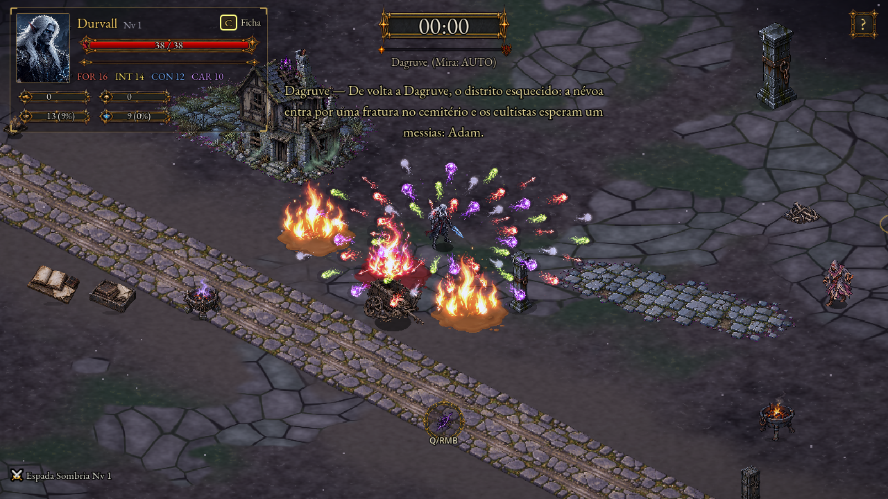
Fallback com efeitos reduzidos
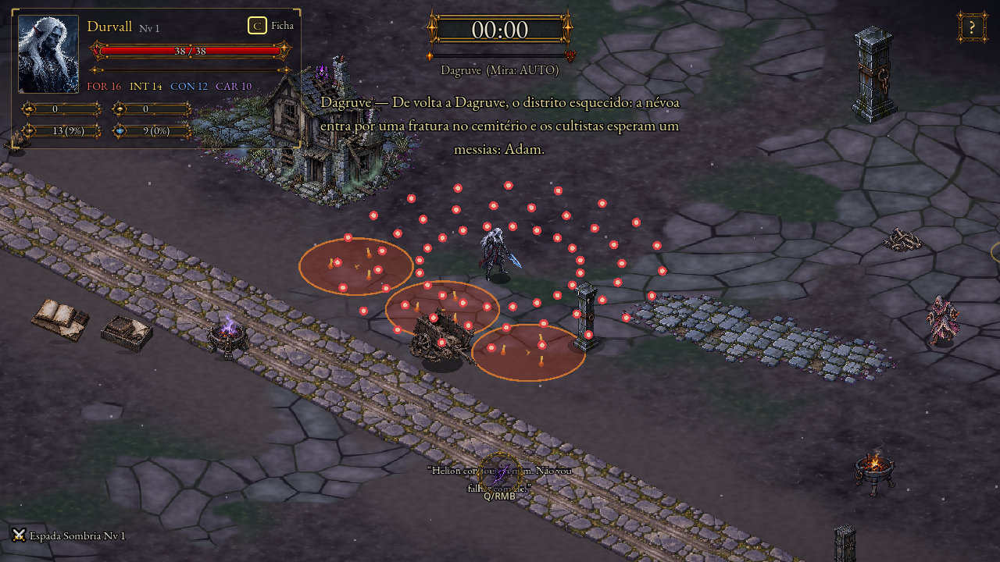
Faíscas e arcos
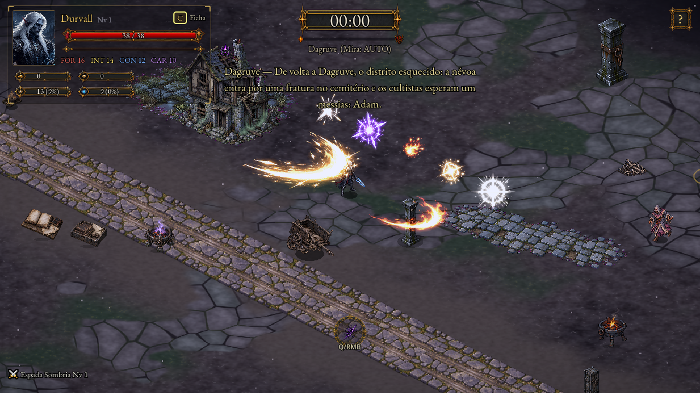
Piso claro sintético
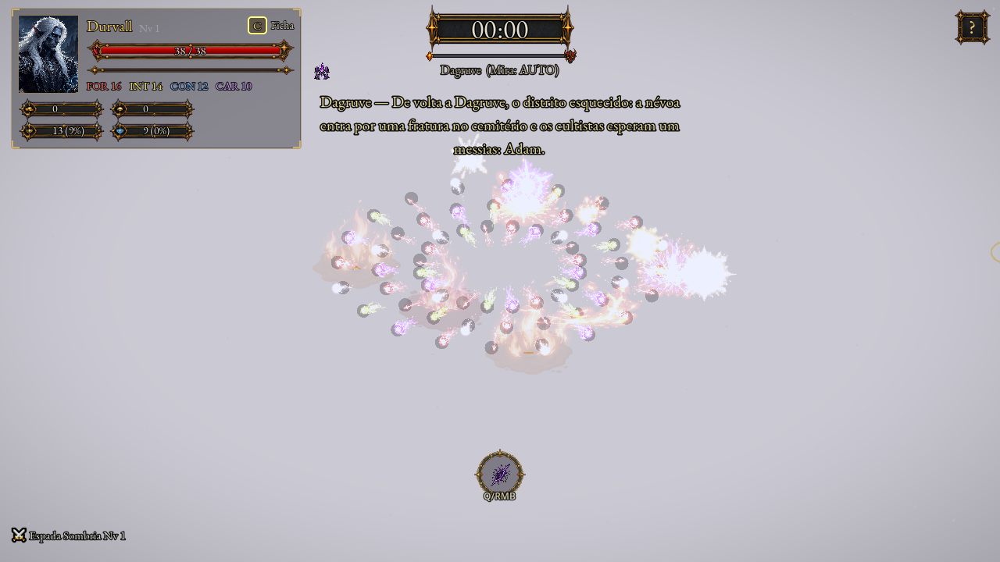
Atlas preparados
As miniaturas percorrem os quadros; as capturas acima mostram a composição e as cores reais no jogo.
F01 · v01cera fervente lancamento
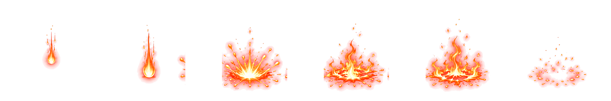
1536x256 · margem mínima 8% · 6 quadros
F02 · v01cera poca corpo
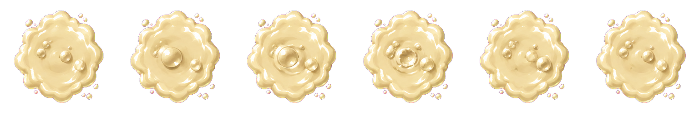
1536x256 · margem mínima 8% · 6 quadros
F03 · v02cera poca chama
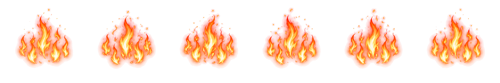
1536x256 · margem mínima 8% · 6 quadros
F04 · v01inferno de cera lancamento
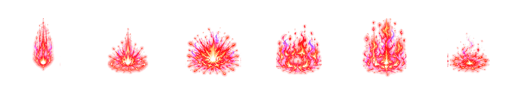
1536x256 · margem mínima 8% · 6 quadros
F05 · v01inferno de cera chama
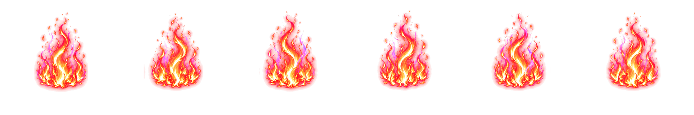
1536x256 · margem mínima 8% · 6 quadros
F06 · v01inimigo flecha
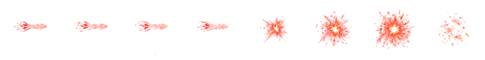
2048x256 · margem mínima 8% · 8 quadros
F07 · v01inimigo esporo
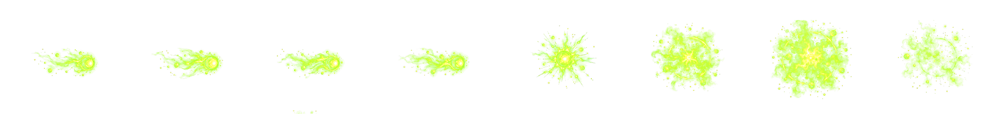
2048x256 · margem mínima 8% · 8 quadros
F08 · v01inimigo orbe abissal
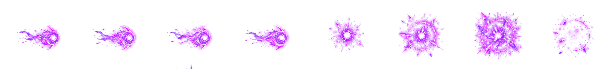
2048x256 · margem mínima 8% · 8 quadros
F09 · v01inimigo orbe infernal
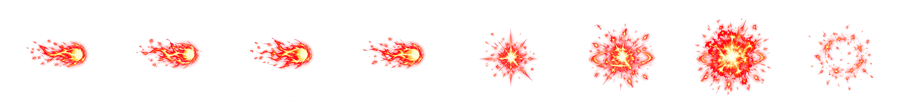
2048x256 · margem mínima 8% · 8 quadros
F10 · v01bala de chefe
2048x256 · margem mínima 8% · 8 quadros
F11 · v01melee radiante arco
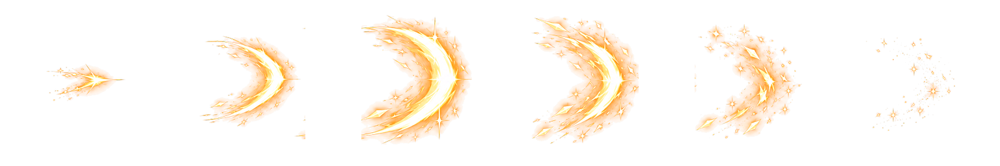
1536x256 · margem mínima 8% · 6 quadros
F12 · v01melee fogo arco
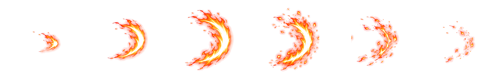
1536x256 · margem mínima 8% · 6 quadros
F13 · v01hit fisico
1536x256 · margem mínima 8% · 6 quadros
F14 · v01hit magico
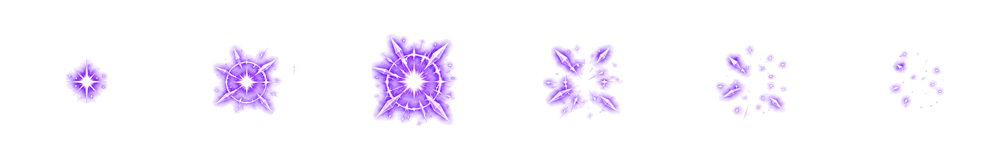
1536x256 · margem mínima 8% · 6 quadros
F15 · v01hit fogo
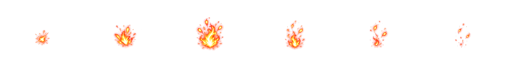
1536x256 · margem mínima 8% · 6 quadros
F16 · v01hit radiante
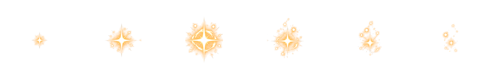
1536x256 · margem mínima 8% · 6 quadros
F17 · v01hit critico
1536x256 · margem mínima 8% · 6 quadros
Próximo checkpoint
Feedback visual e playtest do dono. Aceite das fontes preservado; sem promoção CANON. Mensagens herdadas de certificados/encerramento do Godot e duas falhas mais timeout do controller_check permanecem registradas.
Fontes aprovadas